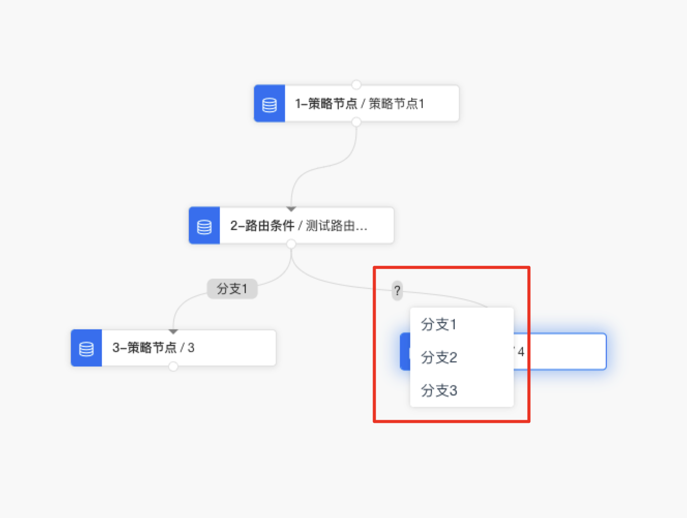
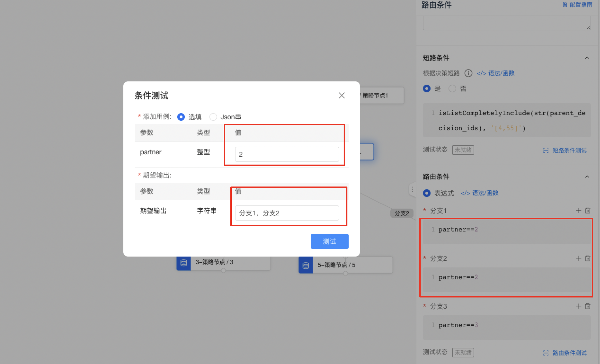

分层场景：路由条件组件
一、背景
分层场景与普通场景的核心能力差异在于支持使用短路、路由等部署方法，构造出一个具有层级执行关系的图。这些能力集成在「路由条件组件」中。本文将介绍如何配置该组件。
二、名词解释
|
名词 |
解释 |
|---|---|
|
新的规则集合实体，对标过去一个普通场景，在场景内支持以层级关系+路由条件组织成树状的执行链路，使场景内策略达到分层执行的效果。因超时（或短路）未执行的链路将获得补偿。 |
|
|
路由条件 |
连接不同层级的策略节点的组件。请求满足分支上的路由条件才能执行对应的下游的策略，类似多级路由中多个路由规则的集成，但不在规则列表中维护，仅归此分层场景所有，不支持跨树共享。在路由条件组件中，可选择启用决策相关的短路条件。 |
|
短路条件 |
「路由条件组件」里的一个配置项。如果开启短路条件，执行到该节点时会优先判断短路条件是否满足，满足则短路，不再往下路由。不满足则继续判断路由条件来决定是否向下个策略节点路由。 |
三、使用指南
3.1 部署
|
说明 |
图 |
|---|---|
|
部署操作
基本信息
在组件左侧，有一个数字即为该组件在该分层场景中的编号ID。 路由条件配置完成后，可以与下方多个策略节点相连接。需要在对应引线上选择对应判断哪个分支的条件，下方不同引线上不允许选择相同的分支。 |
选择分支  |
3.2 短路条件
|
说明 |
图 |
||||||||||||||||||||||||
|---|---|---|---|---|---|---|---|---|---|---|---|---|---|---|---|---|---|---|---|---|---|---|---|---|---|
|
1.启用短路条件 默认不启用。选择「是」则开启短路条件。 效果：执行到该节点时会优先判断短路条件是否满足，满足则短路，不再往下路由；不满足则继续判断路由条件来决定是否向下个策略节点路由。 启用后需要输入关于parent_decision_ids的表达式作为判断条件。 请使用Aviator语法输入。短路条件只允许使用系统内置参数parent_decision_ids（含义：上一个策略节点输出的决策ID），使用其他参数/因子都会提示报错。 parent_decision_ids为数组类型，其中的元素为int型。例如：[65,25,103]，可参考下方常用例子输入表达式。
2.测试短路逻辑 点击【短路条件测试】，可以测试表达式的逻辑执行。在输入框设定该条表达式的输入值，即parent_decision_ids的值，选择执行后期望的输出，即命中与否。 点击测试按钮将会告知用户测试的结果为成功还是失败。 未进行测试，或是最新测试未通过时，状态为未就绪； 最新测试通过时，状态为已就绪。 1.此处并不会记录历史的测试结果，仅提示当前测试的通过与否，请在分层场景的「用例测试」环节之前确认短路条件逻辑就绪。 2.短路条件仅允许使用zeus内置的参数parent_decision_ids |
测试短路条件 |
3.3 路由条件
|
说明 |
图 |
|---|---|
|
1.输入表达式 请使用Aviator语法在路由条件各个分支中输入判断条件。路由条件分支默认至少1个，可以新增删除分支，分支校验不允许空。 分支表达式的含义即为命中对应条件，即可向该分支指向的下一个策略节点路由。 注意，路由条件仅支持普通参数，不支持因子与fetcher出参。若配置fetcher出参作为路由，执行时将作为空值处理！！ 2.测试路由逻辑 点击【路由条件测试】，可以测试表达式的逻辑执行。 在输入框设定分支条件的输入值，即各个分支涉及到的参数的值，再填写执行后期望的输出，即命中的分支id的list，多个则用逗号（中文英文都可）隔开，例如：分支1，分支2 。 点击测试按钮将会告知用户测试的结果为成功还是失败。 未进行测试，或是最新测试未通过时，状态为未就绪； 最新测试通过时，状态为已就绪。 1.此处并不会记录历史的测试结果，仅提示当前测试的通过与否，请在用例测试前确认短路条件逻辑就绪。 2.路由条件仅允许使用在zeus上注册过的参数，不允许使用因子。 |
测试路由条件的多个分支  |
3.4 其他Aviator文档
|
说明 |
链接 |
|
|---|---|---|
|
Aviator语法：详细介绍Aviator语法，包括基本类型和语法，函数等 |
||
|
内置函数：详细介绍Aviator内置函数，包括函数书写，函数功能等 |
||
|
自定义拓展函数：详细介绍zeus现有自定义拓展函数 |
||
|
高阶表达式Array和Map的使用 |
四、FAQ
|
问题 |
答 |
|---|---|
❤️ 欢迎使用并在文档评论区提供宝贵意见与建议！